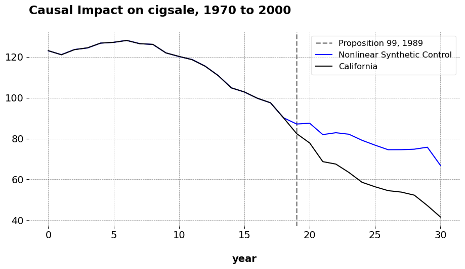

Synthetic Controls With Non-Linear Outcome Trends: A Principled Approach to Extrapolation
Causal Inference
Econometrics
Author
Jared Greathouse
Published
May 19, 2025
Sometimes our outcomes are nonlinear in nature with synthetic control methods, meaning biases can be quite severe if not addressed correctly. This is where the non-linear synthetic control method comes in handy. In this blog post, I present the Python implementation of the method and give an example of how it works using the Proposition 99 dataset.
Non-Linear Synthetic Control
Optimization Problem
Let \(\mathbf{y}_1^{\text{pre}} \in \mathbb{R}^{T_0}\) denote the outcome vector for the treated unit over the pre-treatment period \(\mathcal{T}_1\), and let \(\mathbf{Y}_0^{\text{pre}} \in \mathbb{R}^{T_0 \times N_0}\) be the matrix of pre-treatment outcomes for the control units indexed by \(\mathcal{N}_0\). We seek a weight vector \(\mathbf{w} \in \mathbb{R}^{N_0}\) that minimizes the following objective:
The first term is the standard squared reconstruction error. The second term introduces a discrepancy-weighted \(\ell_1\) penalty, where the discrepancy vector \(\boldsymbol{\delta} \in \mathbb{R}^{N_0}\) is defined by:
This term penalizes control units that differ more from the treated unit in pre-treatment trends. The final term is a Tikhonov regularization penalty that shrinks the weight vector toward zero to improve stability. The parameters \(a > 0\) and \(b > 0\) control the strength of the \(\ell_1\) and \(\ell_2\) penalties, respectively. The constraint \(\|\mathbf{w}\|_1 = 1\) retains the SC to the probability simplex \(\Delta^{N_0 - 1}\), forming an affine combination of the control units.
Cross-Validation to Tune \(a\) and \(b\)
To select optimal regularization parameters \((a, b)\), we perform \(k\)-fold cross-validation using a pseudo-treated framework. Each control unit \(j \in \mathcal{N}_0\) is treated as if it were the treated unit, and we aim to reconstruct \(\mathbf{y}_j^{\text{pre}}\) from the remaining controls. For a given pseudo-treated unit \(j\), let \(\mathcal{N}_0^{(-j)} = \mathcal{N}_0 \setminus \{j\}\) and define the donor matrix \(\mathbf{Y}_0^{\text{pre}, (-j)}\) by removing column \(j\) from \(\mathbf{Y}_0^{\text{pre}}\).
Let \(\widehat{\mathbf{y}}_j^{\text{pre}} = \mathbf{Y}_0^{\text{pre}, (-j)} \mathbf{w}^{(j)}\) denote the predicted outcome. The validation error for unit \(j\) is given by:
The cross-validated error is averaged over all pseudo-treated units and all folds. We then select:
\[
(a^\ast, b^\ast) = \arg\min_{a \in \mathcal{A},\, b \in \mathcal{B}} \; \text{CVError}(a, b)
\]
Here, \(k\) indexes the donor units in the pseudo-treated optimization problem. \(\mathcal{A}\) and \(\mathcal{B}\) are grids of candidate values. In practice, I employ sklearn’s cross-validation utilities to accelerate computation. I had to go rogue from the original approach because on my end it was computationally intensive. This modification seems to perform comparably while dramatically improving runtime. So while the empirical results will not be the same, they are about what we’d expect.
NSC in mlsynth
Now I will give an example of how to use NSC for your own applied work. As ususal, in order to properly implement this, we begin by installing mlsynth from my Github
And then we load the Proposition 99 dataset and fit the model in the ususal mlsynth fashion. As per the ususal, we have a single unit name column which has the names of the donors, a time column (the year in this case), a numeric outcome column, and an indicator column which denotes the treatment when it is active and the unit is the name of the treated unit, else 0.
import pandas as pdfrom mlsynth import NSCurl ="https://raw.githubusercontent.com/jgreathouse9/mlsynth/refs/heads/main/basedata/smoking_data.csv"# Feel free to change "smoking" with "basque" above in the URLdata = pd.read_csv(url)# Our method inputsconfig = {"df": data,"outcome": data.columns[2],"treat": data.columns[-1],"unitid": data.columns[0],"time": data.columns[1],"display_graphs": True,"save": False,"counterfactual_color": ["blue"]}arco = NSC(config).fit()

Here is our observed California versus the counterfactual. The weights shown define an affine combination of control units used to approximate California’s per capita cigarette consumption prior to 1989. The dominant contributor is Nebraska, which carries a weight of 0.540, indicating that it serves as the single most influential donor in replicating California’s pre-treatment trajectory. Other notable positive contributors include Montana (0.171), Nevada (0.168), Colorado (0.148), New Mexico and Connecticut (each at 0.127), Idaho (0.122), and Alabama (0.110). This suggests that their historical smoking trends most closely mirrored California’s prior to the intervention. Several states contribute small positive weights, such as Kansas (0.082), Arkansas (0.029), Minnesota (0.013), and Illinois (0.006). Some control units—North Dakota (-0.250), Tennessee (-0.213), Ohio (-0.195), Indiana (-0.083), and Iowa (-0.035) get negative weight. These negative weights (again bear in mind that this is allowed in affine but not convex combinations) indicate that we are extrapolating beyond the support of the donor pool. Practically, the model is subtracting the influence of these states because their smoking trends diverged from California’s in ways that could distort the synthetic match if left uncorrected. Many remaining states receive weights that are exactly zero or numerically negligible. These states did not contribute to the synthetic California because either their historical trajectories were too dissimilar from California’s, or the regularization in the model penalized their inclusion due to high discrepancy or redundancy with other controls.
As we can see, the fit is near perfect: you can barely even see the fit in the pre-intervention period. I also get similar results to Abadie and co (I also tested this with Basque and West Germany and got similar results). Full disclaimer: I have not programmed the confidence intervals presented in the paper just yet, but they are derived from Section 6 from a bootstrapped procedure. I’ll also allow thge user to compute conformal inference as well, since I presume that’ll be helpful.